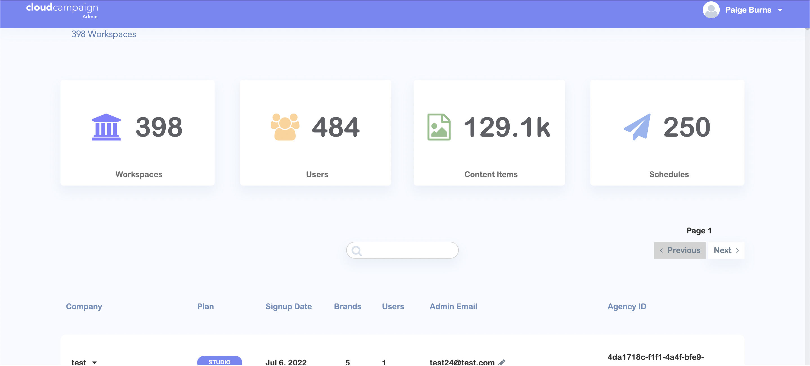
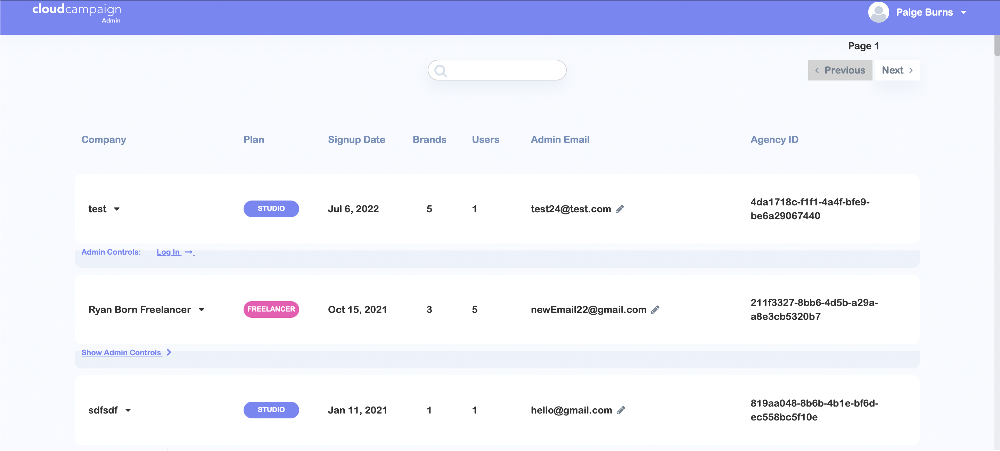
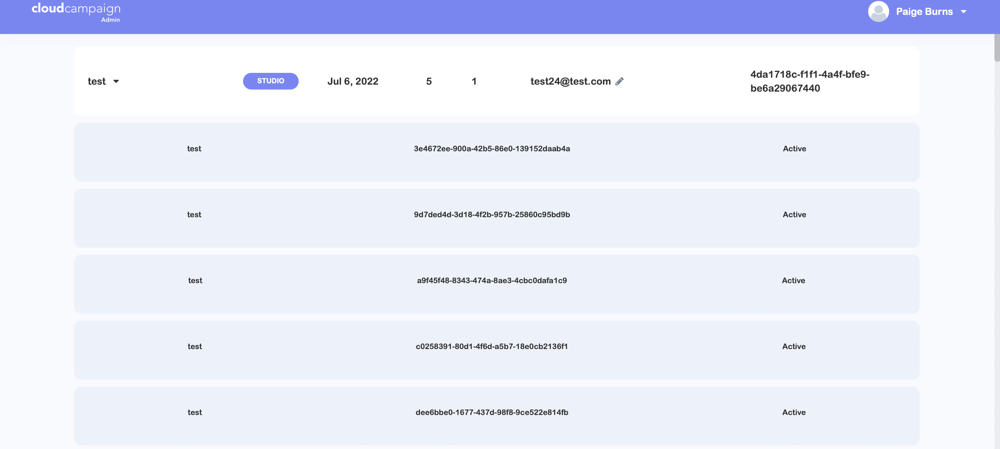
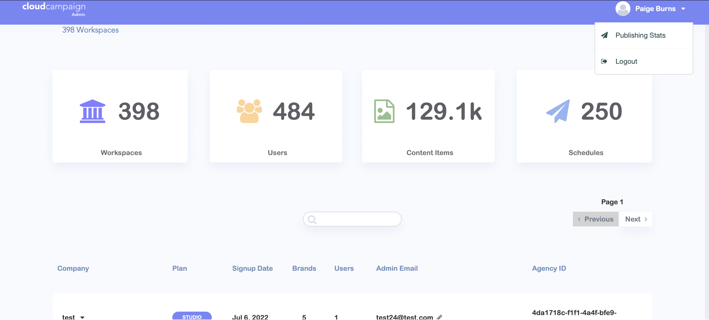
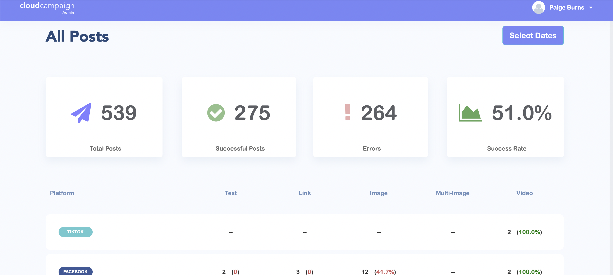
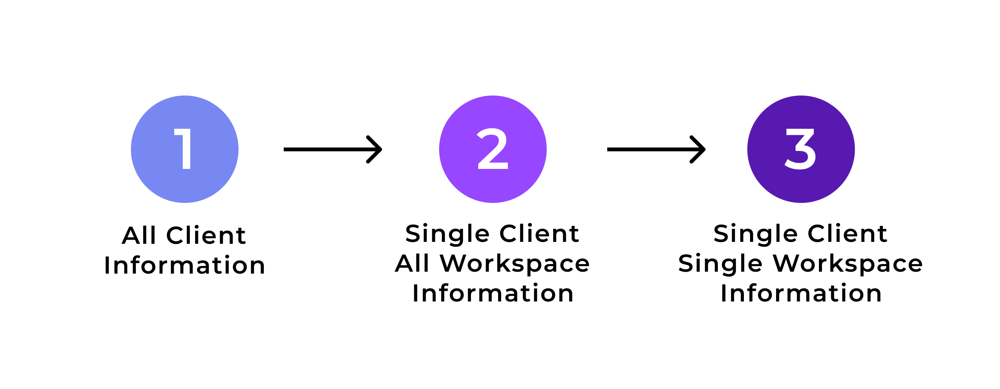
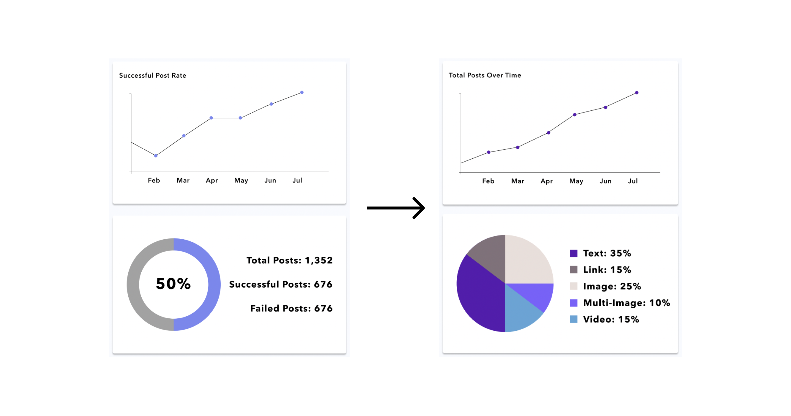
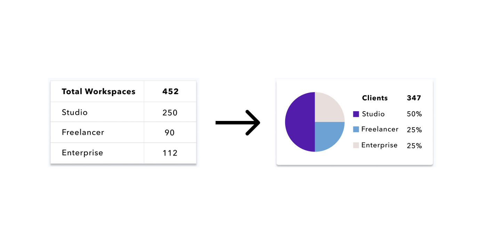
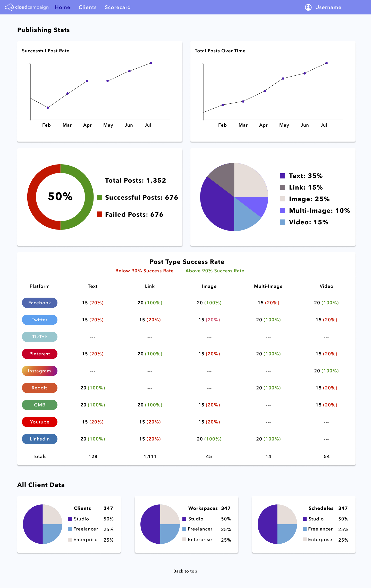

During Summer 2022, I was a Product Design Intern at Cloud Campaign (CC), a white-label, scalable social media management and marketing
software company. As an intern, I worked on both their Social Suite product and Agency Hub beta-release
product.
The other CC interns and I were also tasked with our own project to complete, focusing on
the Admin
Dashboard. The Admin Dashboard was used primarily by the sales team at CC to understand how well customers are
using the platform, as well as what they could improve upon. Our project was to redesign the dashboard .
TEAM: Jane Pyeon, Mya Shell, Bray Torres, Tommy Hua
TIMELINE: June 23rd - August 5th
PRODUCT AUDIT:
What is the Admin Dashboard?
The Admin Dashboard was built for internal
use only. The Sales
and Customer Support (CS) teams at CC needed a way to see details on an agency’s specific client accounts.
This
way, when they were working with these agencies, they could give strategies for using the current products the
agencies were paying for. In addition, they could recommend other CC products that could allow the agency’s
client to be more successful and intentional with their social media.
The Previous Admin
Dashboard:

The main page had repetitive statistics shown, such as the two places that reported the number of
workspaces. In addition, some of the general statistics shown were not numbers that gave any indication on the
success of CC clients.


The rest of the main page was occupied by a long list of clients of CC. Each account had a tag identifying
the plan that each client was paying for with CC, however several of those tags were not plans that CC
offered.
By opening a drop down menu, you could see the accounts associated with each client. However,
to
see the details for a client's specific account, a login was required.
The list of clients was
extremely
long, as can be seen by the small scroll bar, and could only be filtered by
a search bar at the top of the list.


There was a second page that could be accessed through a dropdown by the username in the top right corner.
This page also held general statistics about all clients and their accounts.
As for the specific
workspace
details, my team and I were unable to login to any of the workspaces on this admin dashboard, so we decided to
design that functionality from scratch.
DASHBOARD REDESIGN PRIORITIES:
1. Determine the most useful statistics on the client use of the CC platform
to display. Understand
which data is currently tracked and choose the most useful pieces of data from the available data.
2. Reorganize the information to be easily navigable and understandable for
the Sales and CS team.
USER RESEARCH - UNDERSTANDING THE NEEDS OF THE SALES TEAM:
To understand what stats would be most useful for the CS team, we first comprised a list of questions to get
to know the desired functionality and use of the Admin Dashboard.
Questions for the Sales Team:
What data is currently used to seek and sell opportunities to potential clients currently?
What date ranges would be useful for making these recommendations as well as beneficial for report
compilation (i.e. month to month, quarterly, annually)?
What format is most desirable for data representation?
Our first obstacle was that we didn’t get a concrete answer to our main questions. CS
representatives
didn’t have exact data that they used every single time they spoke with customers. That meant that it was up
to us to understand and prioritize certain data points over others in our designs.
In terms of date
ranges, we got an overall consensus that any type of comparison over time was beneficial. For data
representation, they wanted something “simple and easy” to understand. In addition, the CS team
informed
us that comparing a specific client to an average of our other users could be a helpful metric.
INFORMATION ARCHITECTURE DECISIONS AND INITIAL DESIGN:
We then had to define what data was available for use on the Admin Dashboard. After consulting with both the
engineering team and the customer support team, we learned that the main data that is tracked by CC can be
seen in the Analytics tab in the Social Suite Product.
We created a user
flow to understand how users
would navigate from one section of information to the next, and used the following diagram to design the first
iteration.

While deciding on the most valuable data that
could be taken from the current tracked data, we decided to make a low fidelity
design in Whimsical of the layout we were thinking
of.
For the pages that included data visualizations, we left them mostly blank because we didn’t know which data
points we were featuring yet. With the low fidelity designs, we spent the most time conceptualizing the Client
Page, making it easier to scroll through with a table format, and keeping it consistent with other CC products
such as the Service Management in Agency Hub, which I
also helped create.
We also designed a report
builder that would allow the sales team to compose a custom pdf with certain data points for a client.
However, that feature was more of a “nice-to-have”, and wasn’t a priority feature to
be included in the final product.
Once the low fidelity design was complete with all the pages we knew we wanted to include, we ran the
design
by the engineers to see if the overall concept was feasible for them to complete in the timeline we were
given.
We got approval from the engineers and pushed forward with starting the high fidelity designs.
USER TESTING:
Due to the short timeframe of our project, we got feedback from users and engineers while we were building
the second iteration. We did not do formal user testing for this feature, rather small user testing with
employees around the office for feedback.
Here are several of the changed we made throughout the
design:
1. Different color palette: The colors on the charts didn’t pop because
they were
monochromatic with the main CC
color, so I expanded the color palette.

2. Use less tables and more charts: The amount of tables we had lined
up next to each other was hard to read, so we changed the format to a pie chart.

After getting this feedback, I made changes and planned out the interactive components such as hovering
ability and filtering functionality in the prototype.
FINAL PROTOTYPE:
I’ve included a walkthrough of all of the pages and features I designed: a home page, client page, workspace
page, and scorecard builder.
Home Page:

We made all of the statistics and data move visual, so that the Sales team could understand and use this
data quickly and easily. The data summarizes the success rate of all posts and the types of posts through
Social Suite, and the packages that clients have bought when they are using Social Suite for their
businesses.
The main focus is CC’s overall post success rate. CC has a goal
to have all post success
rates above 90%, so once that entire table is green, they’ll be able to tell with this dashboard.
This page is a very easily readable list of all the clients. Each client row can be expanded to see all of a
client’s workspaces and navigate to their specific data page. A user can also search for a specific client
using the client name, plan tier, date joined, admin email, and agency ID. The list also has pagination so
that the list isn’t too overwhelming.
These pages are formatted similar to the client page so that users don’t have too many
behaviors to learn
throughout using this product. There are also charts and graphs showing the same subject of information as the
homepage, but the charts are able to be filtered to a certain time period by using the “Start Date” and “End
Date” drop down menus.
Through this page, users can see all the failed and successful posts of their workspace, and the number of
followers over all of the workspace’s accounts. They can also filter the posts shown in the table and expand
each row to navigate directly to the failed post and understand the reason behind
the failure.
This feature allows the user to see the top performing clients, top platforms used, and top posts of all CC’s
clients. It also allows users to add comments on the report, and download the report as a .pdf to their
computer.
INTERACTIONS:
Home Page:
Clients and Workspaces Page:
Scorecard Page:
POTENTIAL NEXT STEPS:
Currently, the scorecard is only for data gathered on all of Cloud Campaign’s clients, and cannot be
filtered down to one client or one client’s specific workspace. I believe the next steps for the project
would be to include this functionality of switching between “All Client”, “One Client All Workspaces”, and
“One Client One Workspace” to create a downloadable report.
In addition, I think that adding some
comparative abilities to the Admin Dashboard would be beneficial to show clients how well they are doing
compared to Cloud Campaigns “average” client.
REFLECTION:
This project was my opportunity to lead the designs of a feature from start to finish. My product manager
was there to help, but I guided the project throughout my internship. I understand the value of low fidelity
designs versus high fidelity designs, as well as the benefits to a well developed prototype.
In
addition, I learned the importance of thinking from many perspectives (customer support needs, design wants,
and software engineering abilities and obstacles). The software engineers building this dashboard had to build
the dashboard in the existing environment instead of starting from scratch, making the coding process more
difficult. I had to keep that in mind when creating the new designs and was mindful to manage the amount of
detail on each page.
Overall, my time at Cloud Campaign helped me learn so much about what I want in a
future job. I loved the fast paced environment I was thrown into. I was able to have
a direct impact on the
product, and some of my design changes were even implemented before my internship was over.